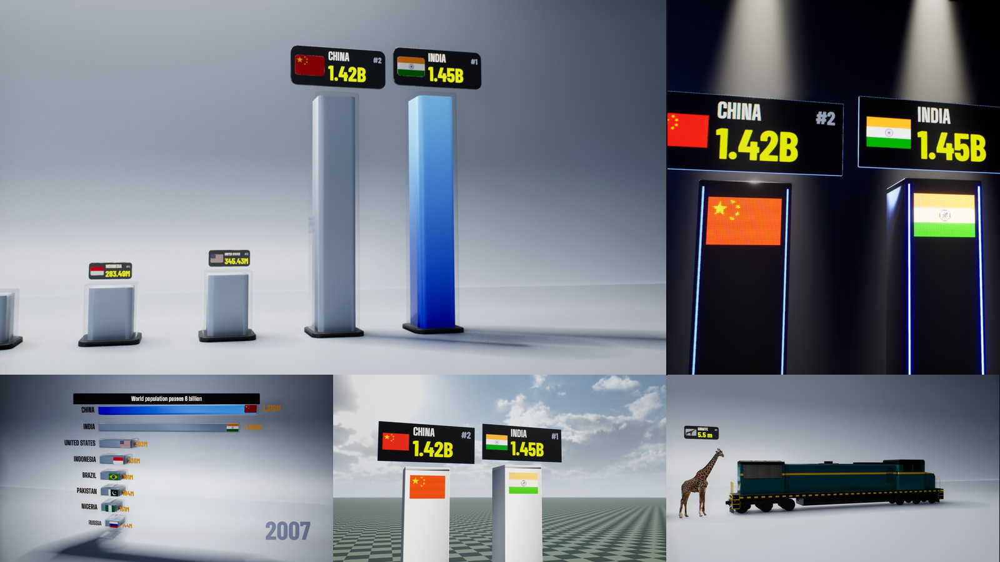
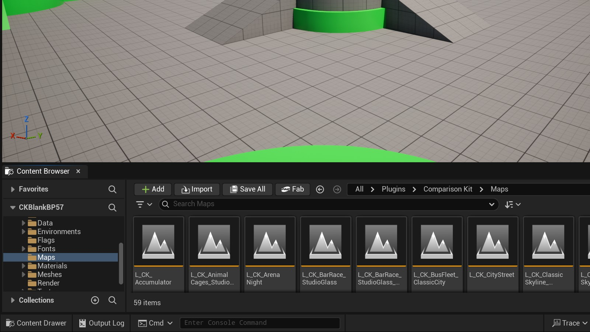
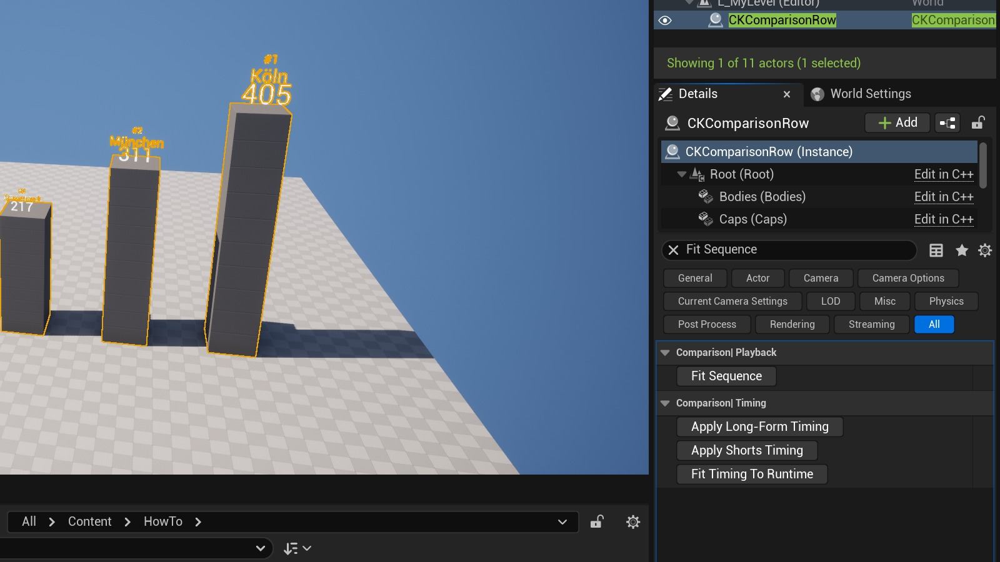

Comparison Kit documentation
Data-driven 3D comparison videos in Unreal Engine 5.3 to 5.8. Fill a CSV or a DataTable, press Fit Sequence, render with Movie Render Queue. No code.

Comparison Kit ships 20 video formats, each with a demo map you can play in one click: ranked column races, height and scale comparisons, unit piles, versus duels, bar chart races, speed races, radius rings, a map stage, marble elimination and more. Every format is one actor in your level; everything is set in its Details panel, under the category Comparison.
Quick Start (5 minutes)
A. Watch a finished demo
- Enable Show Plugin Content in the Content Browser settings (the plugin's content is hidden by default).
- Open
Plugins > Comparison Kit > Mapsand double-click L_CK_StudioGlass. - Press Play. The comparison starts by itself (Auto Play) and the camera follows the data.

Every format has its own map: see Formats. Most are in the bright Studio Glass set and have a 9:16 copy whose name ends in _Shorts.
B. Make your own video
- Open the demo map closest to what you want, then File > Save Current Level As into your project. (Or place a CK actor in your own level, for example CK Comparison Row, from the Place Actors panel.)
- Select the comparison actor in the Outliner. Everything is in the Details panel under Comparison.
- Under Comparison | Data, set Csv File to your table. The actor rebuilds the moment you set it. A minimal file looks like this:
label,value,country
Brazil,216,BR
Japan,124,JP
Egypt,112,EG
To watch it with Play before you make a sequence, tick Auto Play (under Comparison | Playback): Time runs by itself and the actor's camera takes over the view. A placed actor starts with Auto Play off, because a Level Sequence drives it in the normal workflow. An empty level (File > New Level > Basic) keeps template characters and blocks out of the shot.
- Set Title, Value Suffix and Decimals to taste. Read Data Warnings: it lists everything the kit decided about your file. See Data.
- Press Fit Sequence (under Comparison). The kit creates a Level Sequence next to your level, keys the Time track from 0 to the end of the data and adds the camera cuts. Open the sequence and scrub: the whole scene follows. See Sequencer.
- Render with Movie Render Queue: add the sequence and pick a preset from
Plugins > Comparison Kit > Render. Presets exist for 16:9, 9:16 Shorts, 1:1 and 4K. See Rendering.

The camera, cards, overlay and timing are all driven by one value, Time. That is why scrubbing, Sequencer and a rendered movie always match.
Requirements
- Unreal Engine 5.3, 5.4, 5.5, 5.6, 5.7 or 5.8 on Windows. Blueprint-only projects work: the plugin ships compiled.
- The plugin uses the engine's Text3D plugin (enabled with it) for every label and title.
- The looks are built for the project defaults: Lumen and Virtual Shadow Maps (Project Settings > Rendering). Both are on in every project created from the New Project dialog. Without Virtual Shadow Maps the scenes still work but render about three times slower.
Where to go next
| I want to... | Read |
|---|---|
| Use my own numbers | Data |
| Retime, add my own camera or tracks | Sequencer |
| Pick a format | Formats |
| Change the look, the set, label styles, 9:16 | Looks |
| Render 16:9 and Shorts | Rendering |
| Drive it from Blueprint | Blueprint API |
| Something went wrong | FAQ and troubleshooting |
| Licenses and data sources | Credits |
Support: found a problem or have a question? Open an issue and include your Unreal Engine version, the format, and the Data Warnings text from the comparison actor if the problem is about data.